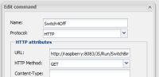

Forums : Strange Rule? Error
This page last changed on May 07, 2014 by pz1.
I have this rule which controls a Z-Wave plugin switch:
// For my sore bones rule "Blanket on" timer (cron: 0 0 22 * * ?) when eval (true) then execute.command("Switch4On"); end rule "Blanket off" timer (cron: 0 59 23 * * ?) when eval (true) then execute.command("Switch4Off"); end
The rule seems to work OK, as it does switch on/off at the specified time. As some off my other rules are not working reliably, I have looked into my logs and found the following error message related to this rule in the dev.log:
2014-05-06 23:59:00,107 ERROR [pool-15-thread-1]: ClientProtocolException when executing HTTP method org.apache.http.client.HttpResponseException: Internal Server Error at org.apache.http.impl.client.BasicResponseHandler.handleResponse(BasicResponseHandler.java:67) at org.apache.http.impl.client.BasicResponseHandler.handleResponse(BasicResponseHandler.java:54) at org.apache.http.impl.client.AbstractHttpClient.execute(AbstractHttpClient.java:735) at org.apache.http.impl.client.AbstractHttpClient.execute(AbstractHttpClient.java:709) at org.apache.http.impl.client.AbstractHttpClient.execute(AbstractHttpClient.java:700) at org.openremote.controller.protocol.http.HttpGetCommand.requestURL(Unknown Source) at org.openremote.controller.protocol.http.HttpGetCommand.send(Unknown Source) at org.openremote.controller.model.Command.execute(Unknown Source) at org.openremote.controller.model.Command.execute(Unknown Source) at org.openremote.controller.statuscache.CommandFacade.command(Unknown Source) at org.openremote.controller.statuscache.CommandFacade.command(Unknown Source) at org.openremote.controller.model.event.Rule_Blanket_off_0.defaultConsequence(Rule_Blanket_off_0.java:13) at org.openremote.controller.model.event.Rule_Blanket_off_0DefaultConsequenceInvoker.evaluate(Rule_Blanket_off_0DefaultConsequenceInvoker.java:25) at org.drools.common.DefaultAgenda.fireActivation(DefaultAgenda.java:917) at org.drools.common.Scheduler$ActivationTimerJob.execute(Scheduler.java:73) at org.drools.time.impl.JDKTimerService$JDKCallableJob.call(JDKTimerService.java:147) at org.drools.time.impl.JDKTimerService$JDKCallableJob.call(JDKTimerService.java:125) at java.util.concurrent.FutureTask.run(FutureTask.java:262) at java.util.concurrent.ScheduledThreadPoolExecutor$ScheduledFutureTask.access$201(ScheduledThreadPoolExecutor.java:178) at java.util.concurrent.ScheduledThreadPoolExecutor$ScheduledFutureTask.run(ScheduledThreadPoolExecutor.java:292) at java.util.concurrent.ThreadPoolExecutor.runWorker(ThreadPoolExecutor.java:1145) at java.util.concurrent.ThreadPoolExecutor$Worker.run(ThreadPoolExecutor.java:615) at java.lang.Thread.run(Thread.java:745)
 The Command execute.command("Switch4Off") used in the rule refers to an http GET command to the Raspberry Pi RaZ-OR module. Anybody out here who has a clue what's happening?
{kind=link}
edit: other rules with similar cron construct have similar errors
edit2: My controller is a Pro 1.0.13 received for test a couple of weeks ago.
{kind=link}